Sachkundeprüfung üben
Übe für die Sachkunde Pflanzenschutz: Fragen mit Erklärung, Prüfungssimulation und Etikett-Auflagen kurz erklärt – auf Deutsch und offline.
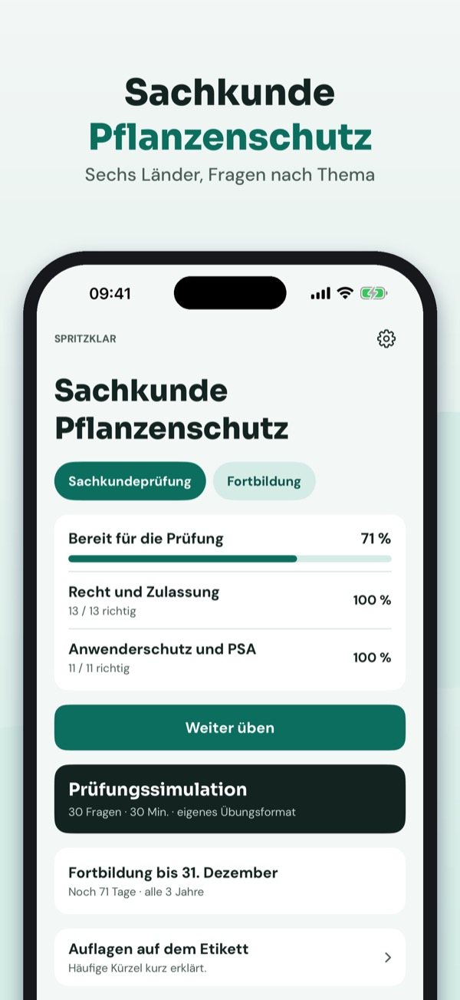
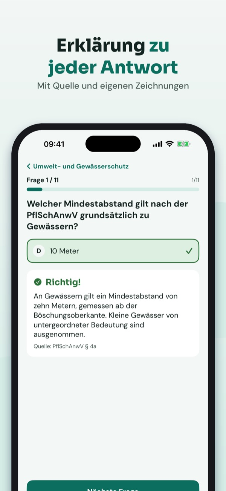
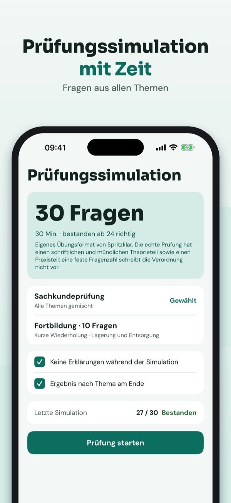
Spritzklar hilft dir, die Theorie für den Sachkundenachweis Pflanzenschutz zu üben – für die Prüfung und die Fortbildung in Deutschland und Österreich.
• Fragen nach Thema mit Erklärung zu jeder Antwort
20 Fragen, die Begriffe und die Checkliste kannst du ohne Kauf nutzen. Die Vollversion ist ein Einmalkauf und schaltet alle Fragen, Simulationen und die Statistik frei. Kein Abo.
Spritzklar ist unabhängig und nicht mit Behörden, Landwirtschaftskammern oder Kursanbietern verbunden. Den Nachweis bekommst du nach Kurs und Prüfung.
Terms of Use (EULA): https://www.apple.com/legal/internet-services/itunes/dev/stdeula/
Privacy: https://baytechbv.github.io/privacy/pflanzenschutz-eu/
Esame patentino: quiz e teoria
Prepara l’esame per il patentino fitosanitari: domande con spiegazione, simulazioni d’esame e prescrizioni in etichetta – in italiano e offline.
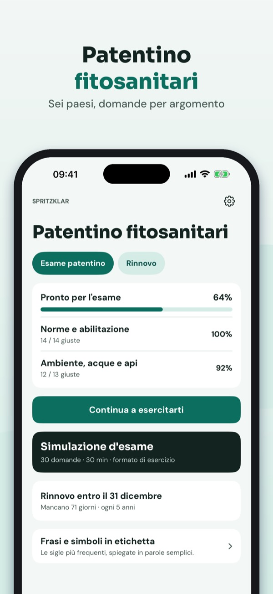
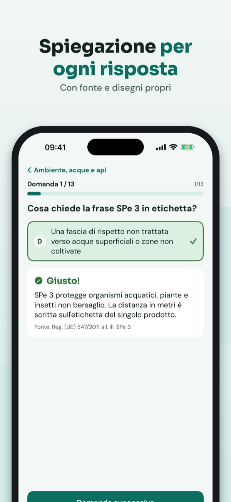
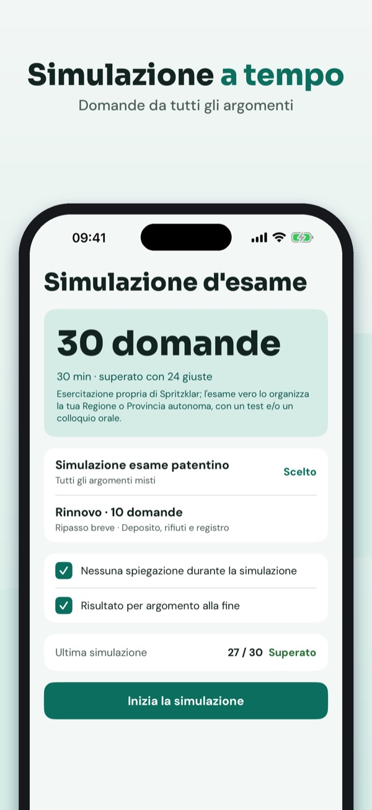
Spritzklar ti aiuta a ripassare la teoria per il patentino fitosanitari (abilitazione all’acquisto e all’utilizzo) – per l’esame e per il rinnovo.
• Domande per argomento con spiegazione per ogni risposta
Puoi esercitarti con 20 domande, il glossario e la checklist senza acquisto. La versione completa è un acquisto unico che sblocca tutte le domande, le simulazioni e le statistiche. Nessun abbonamento.
Spritzklar è indipendente e non è collegato a Regioni, ministeri o enti di formazione. L’esame si sostiene presso l’ente competente.
Terms of Use (EULA): https://www.apple.com/legal/internet-services/itunes/dev/stdeula/
Privacy: https://baytechbv.github.io/privacy/pflanzenschutz-eu/
Quiz et théorie phytosanitaire
Révisez le Certiphyto : questions avec explication, tests d’entraînement et mentions de l’étiquette – en français et hors ligne.
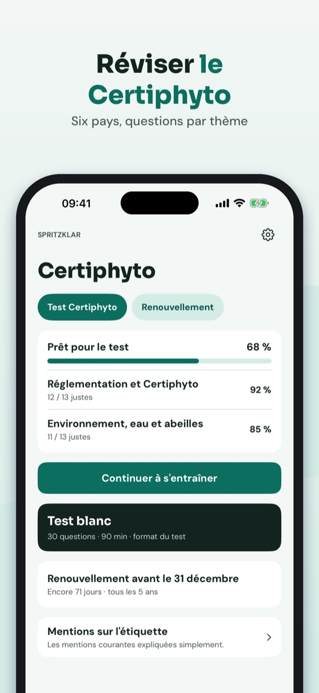
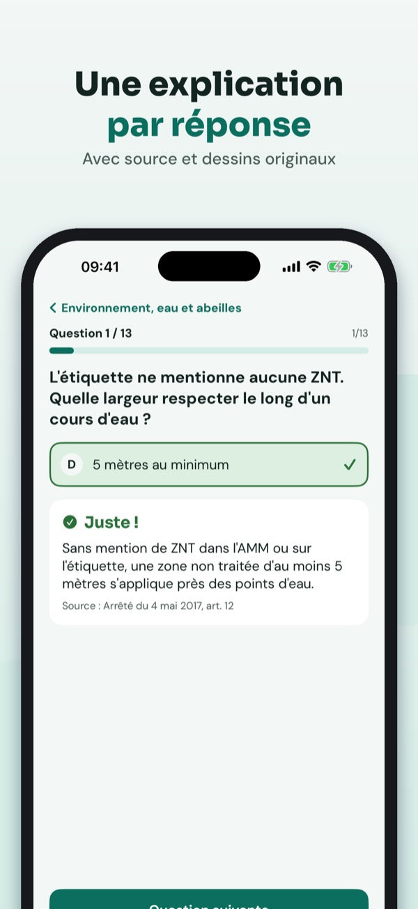
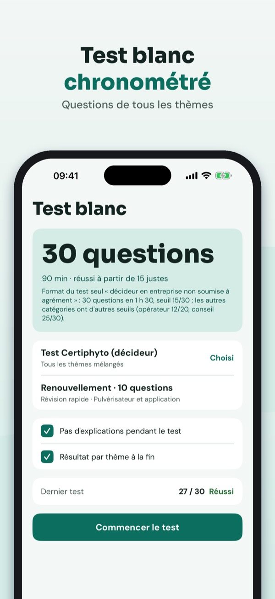
Spritzklar vous aide à réviser la théorie du Certiphyto – pour le test, la formation et le renouvellement du certificat.
• Questions par thème avec une explication pour chaque réponse
Vous pouvez vous entraîner sur 20 questions, le lexique et la liste sans achat. La version complète est un achat unique qui débloque toutes les questions, les examens blancs et les statistiques. Sans abonnement.
Spritzklar est indépendant et n’est lié ni au ministère ni à un organisme de formation. Le certificat s’obtient auprès d’un organisme habilité.
Terms of Use (EULA): https://www.apple.com/legal/internet-services/itunes/dev/stdeula/
Privacy: https://baytechbv.github.io/privacy/pflanzenschutz-eu/
Theorie en oefenexamens
Oefen voor je spuitlicentie: vragen met uitleg, oefenexamens en de voorschriften op het etiket – in het Nederlands en zonder internet.
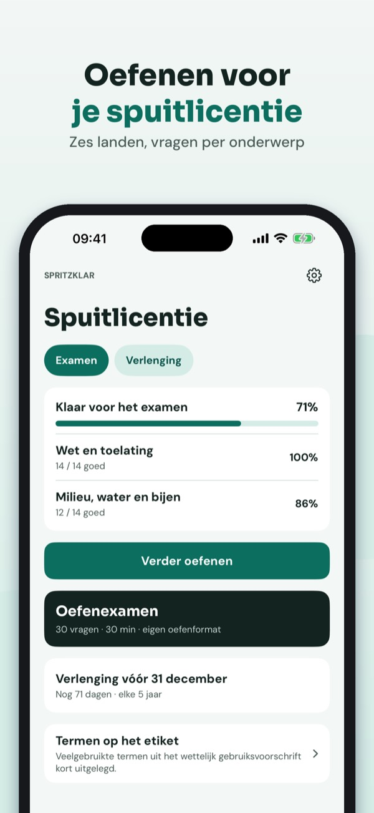
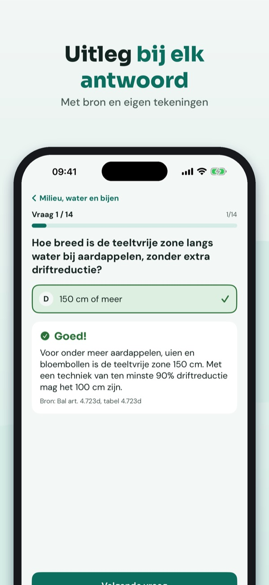
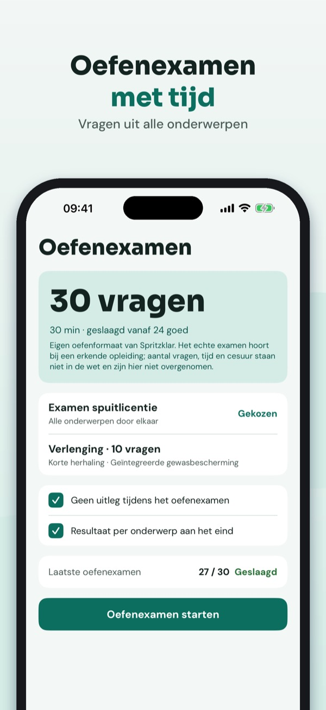
Spritzklar helpt je oefenen voor het examen gewasbescherming (spuitlicentie) – en houdt je bijscholing in de gaten.
• Vragen per onderwerp met uitleg bij elk antwoord
Je kunt 20 vragen, de begrippenlijst en de checklist zonder aankoop gebruiken. De volledige versie is een eenmalige aankoop die alle vragen, proefexamens en statistiek ontgrendelt. Geen abonnement.
Spritzklar is onafhankelijk en niet verbonden aan de overheid of een opleider. Je examen doe je bij een erkende examenorganisatie.
Terms of Use (EULA): https://www.apple.com/legal/internet-services/itunes/dev/stdeula/
Privacy: https://baytechbv.github.io/privacy/pflanzenschutz-eu/
Teori och övningsprov
Öva inför sprutbehörigheten: frågor med förklaring, övningsprov och villkoren på etiketten – på svenska och utan internet.
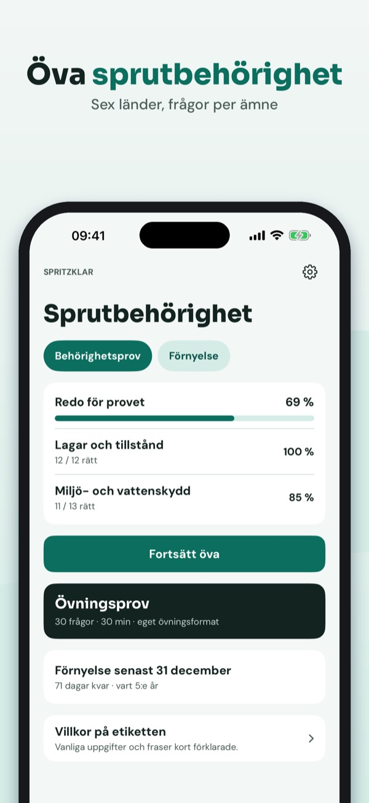
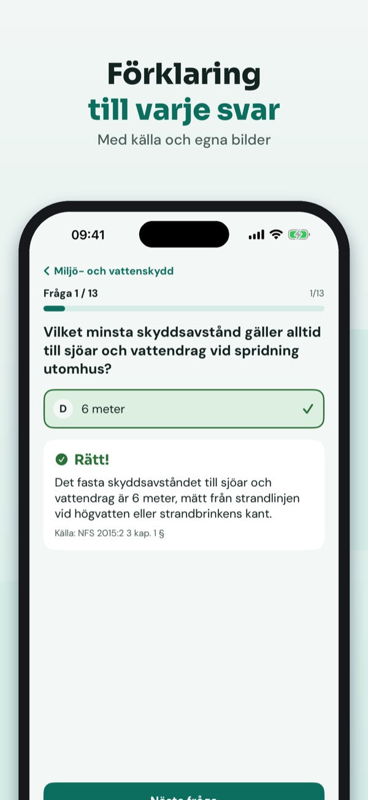
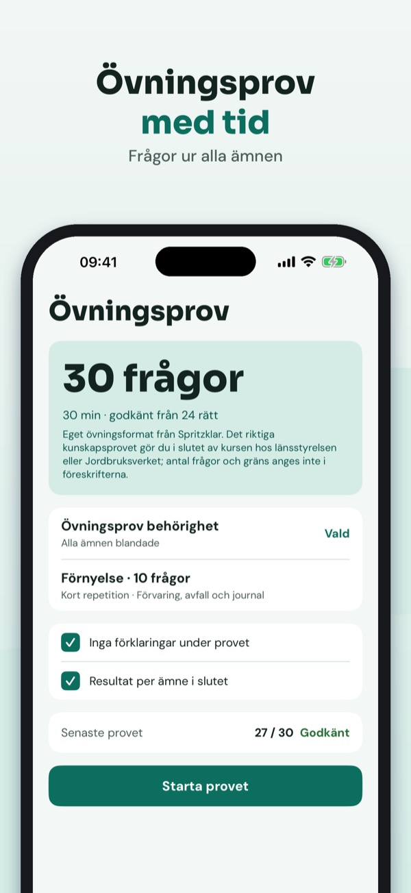
Spritzklar hjälper dig att öva teorin för behörighet att använda växtskyddsmedel – inför provet och förnyelsen.
• Frågor per ämne med förklaring till varje svar
Du kan öva 20 frågor, ordlistan och checklistan utan köp. Fullversionen är ett engångsköp som låser upp alla frågor, övningsprov och statistik. Ingen prenumeration.
Spritzklar är fristående och inte kopplat till Jordbruksverket eller någon kursanordnare. Behörigheten får du efter kurs och prov.
Terms of Use (EULA): https://www.apple.com/legal/internet-services/itunes/dev/stdeula/
Privacy: https://baytechbv.github.io/privacy/pflanzenschutz-eu/